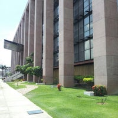

Rafael Albuquerque Baltar
Advogado, Estudante do Primeiro Período de Ciência da Computação da UFPE


Acadêmico
- Estudante do curso de direito da UFPE (2012-2017)
- Monitor da cadeira de Criminologia (Períodos 2016.1;2016.2)
- Tese de conclusão de curso: Aluno: Rafael Albuquerque Baltar
VALENCA, Manuela. Abath.; LUNA, E. S.;MELLO, MARÍLIA MONTENEGRO PESSOA DE. O uso da prisão preventiva para obtenção da delação premiada em crimes de colarinho branco. 2017. Trabalho de Conclusão de Curso (Graduação em Direito) - Universidade Federal de Pernambuco
Profissional

- Estagiário do Ministério Público de Pernambuco (2015)
- 45ª promotoria de justiça criminal da capital, com atuação na 3ª vara do tribunal do júri da capital
- 2ª promotoria de justiça criminal da capital, com atuação na 2ª vara criminal da capital
- 10ª promotoria de justiça de defesa da cidadania da capital, com atuação na tutela de fundações, entidades e organizações sociais
- Registro na OAB: Agosto de 2017
- Profissional liberal: Foco nas áreas trabalhista e penal